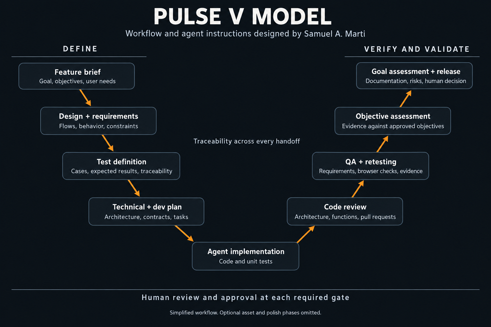

AI Assisted Product Engineering
From feature brief to validated code
I designed PULSE's V model workflow and agent instruction system. I defined the agent roles, required inputs and outputs, handoffs, traceability rules, and human approval gates. Within this workflow, coding agents implemented the product changes while I reviewed architecture, functions, and pull requests and directed validation.
- Agent workflow design
- Agent instruction design
- V model
- Requirements engineering
- Requirements traceability
- Test design
- Architecture review
- Pull request review
- Unit testing
- Integration testing
- QA evidence
- Human approval gates
- Product validation
Summary
My achievement was designing a reusable engineering workflow and the agent instructions that take a feature from a brief to implementation and validation evidence.
The V model made that connection explicit. A feature brief established the goal and objectives. Design and requirements defined the behavior. Test cases specified how to check it before implementation began. Agents then implemented the approved work, while code review, QA evidence, and objective assessment provided the basis for a human release decision.
Delivery workflow
- Feature brief and requirements
- Test definition and technical planning
- Agent implementation and verification
- Objective assessment and release approval
What I Designed
I adapted the V model into a working instruction system for PULSE. The design specified how specialist agents collaborate, what each phase must produce, and where human judgment remains necessary.
Workflow architecture
I defined the phase sequence and handoffs from product definition through requirements, test planning, implementation, QA, objective assessment, documentation, and release.
Agent instructions
I designed the roles, required inputs, expected outputs, ownership boundaries, critical questions, and recommendation rules for each agent.
Traceability structure
I connected goals, objectives, requirements, test cases, implementation tasks, and QA evidence so downstream work remains tied to approved intent.
Human approval gates
I defined when an agent must stop for review, how failed or untested checks are recorded, and what evidence is needed for a release decision.
V Model: From Intent to Evidence
The workflow I designed moves down the definition side from the feature goal into user needs, design, functional requirements, test cases, and an implementation plan. After coding, it moves back toward the original intent: review the implementation, verify requirements, assess objectives, and decide whether the feature is ready for release.

The workflow and agent instruction system I designed for PULSE. This is a conceptual rendering of the documented process, not a completed test record. Select the image to enlarge it.
Read the stage by stage mapping
| Define the change | Verify and validate |
|---|---|
| Feature briefGoal, objectives, and user requirements. | Goal and objective assessmentEvidence reviewed against the original intent, followed by a human release decision. |
| Design definitionUser flows, interface states, and design requirements. | User and interface validationUser scenarios, browser checks, and screenshot evidence against the approved design. |
| Functional requirementsRequired behavior, constraints, and important edge cases. | Requirement verificationFunctional and integration checks, recorded defects, and retesting against the agreed behavior. |
| Test and technical planningExpected results, architecture where needed, and linked implementation tasks. | Code and unit test reviewImplementation, unit test results, and known issues reviewed against the approved plan. |
Coding agents implement the approved tasks and unit tests. Test case definition, implementation, and QA execution have separate responsibilities.
Traceability made the process reviewable. Feature records linked objectives and requirements to test cases, then linked implementation tasks and unit test results back to those definitions. QA reports were structured to carry evidence back to requirements and objectives. A changed requirement therefore had an explicit set of tests and implementation decisions to revisit.
Private feature specifications and operational data are not reproduced here.
User Signal and Product Decision
I built the internal analytics used to identify friction and measure product changes: acquisition and activation funnels, configurable user flow analysis, cohort retention, repeat authentication milestones, and bottleneck reports. Administrators could select which actions to track and inspect the flows between them. I used those reports alongside A/B tests, community feedback, and user research. For onboarding, the outcome that mattered was whether a first time user completed their first lineup.
The resulting changes moved registration until after initial play, replaced the tutorial with a milestone system, and adjusted the pace and speed of actions. This let users experience the game before committing to registration and gave them guidance through progress.

The PULSE lineup workspace. This shows the product context, not a comparison of the old and new onboarding flows.
Validation, Approval, and Ownership
I reviewed architecture, functions, and pull requests, directed changes, and oversaw unit and integration testing. The workflow required human approval at the relevant definition, planning, code review, QA, and release gates. An agent recommendation was input to that decision, not a replacement for it.
Test design and QA execution were deliberately separated. The test definition established the action, expected result, and required evidence. QA checked the implementation against those approved artifacts without changing the requirements or rewriting the tests to fit the code. Failed checks required evidence or reproduction notes; skipped checks required a reason.
Verification asked whether the implementation met its specification. Validation returned to the user need and feature goal. The release gate required objective assessment, known issue review, synchronized documentation, and human approval. Code being implemented or unit tests passing did not, by itself, mean that every validation gate was complete.
After release, the analytics I built let me examine activation and return behavior. I also owned monitoring, defect investigation, data recovery, and user support. This feedback informed the next feature brief; it remained separate from the evidence that the code met its agreed requirements.
Achievement and Evidence
I designed the delivery system itself: the workflow, agent instructions, traceability structure, and human approval gates used to direct feature engineering at PULSE.
The instruction files and linked feature records are evidence of that design. They define responsibilities, specify required artifacts, and keep implementation status separate from validation status.
Separately, the onboarding changes increased the share of first time users completing their first lineup by 236%.
This is the reported relative improvement from the combined onboarding changes. It is not a percentage point increase, a result attributed to AI or the V model alone, or a measured gain in engineering speed. The public case study does not include the underlying cohort sizes or measurement window.
The transferable skill is designing and operating an agentic engineering system, from an ambiguous feature brief to reviewed code and validation evidence. It combines workflow architecture, instruction design, requirements engineering, test design, and accountable release decisions.